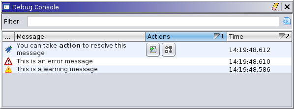

|  |
The console logs messages from Ghidra related to the debugger. Depending on the exact configuration, this can comprise a wide range of components, including all GUI views, active connectors, and running agents. Currently, it implements an appender to gather all Log4J messages emitted by Ghidra and filters for debugger-related packages and a level in the range INFO through FATAL, inclusive. That feature will likely be removed as more components are programmed to work directly with the console. Soon, it may also provide a command-line interface to control Ghidra's debugging sessions and interact with traces.
Some log messages include an action context, allowing plug-ins to offer actions on that message. These are said to be "actionable" messages. A noteworthy example is when navigating to a module that could not be automatically mapped from the current project. Instead of displaying a prompt, it will log a message and suggest actions to resolve the issue. A successful resolution typically removes the message from the log. Note that additional actions may be available from the context menu.
By default, the log is sorted so that actionable messages appear at the top. Then, it is sorted by descending date, so that the most recent messages appear at the top. Like any other Ghidra table, it can customized and filtered. Note that the filter box is at the top, because we anticipate a command-line input in the future, which we'd like to place at the bottom.
The table has the following columns:
Not considering extension actions from other plugins, the console provides the following:
Removes all messages, including actionable messages, from the log.
Resets the selection, usually so table scrolling can be restored to "normal."